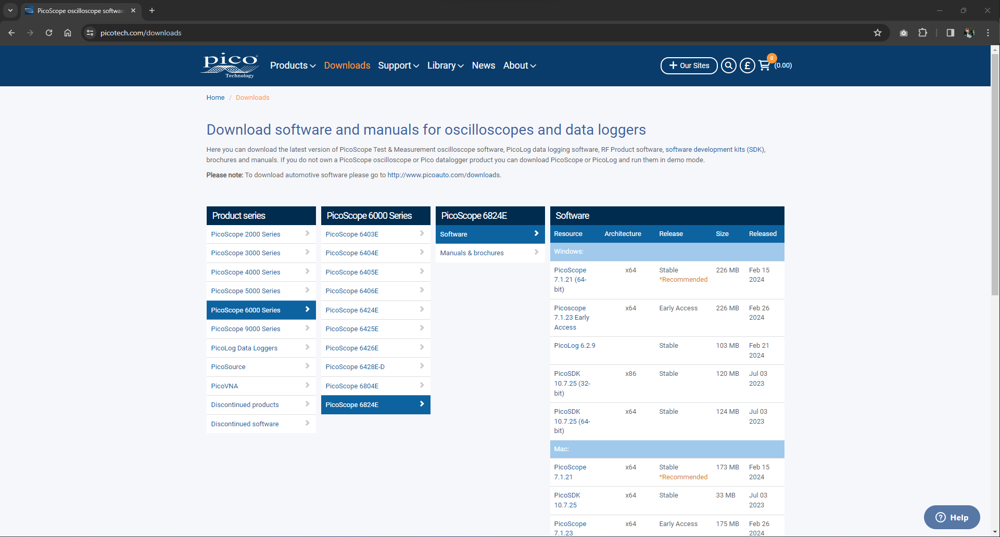
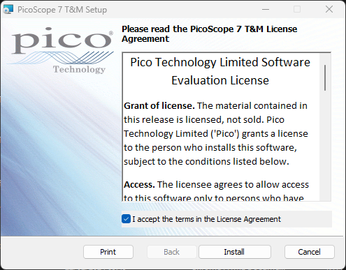
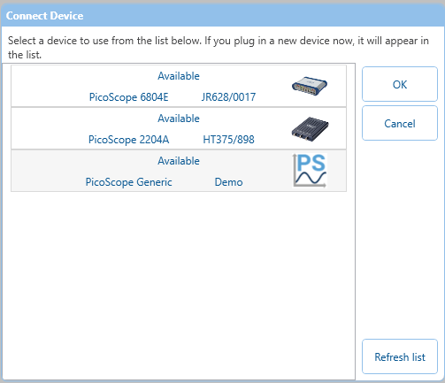
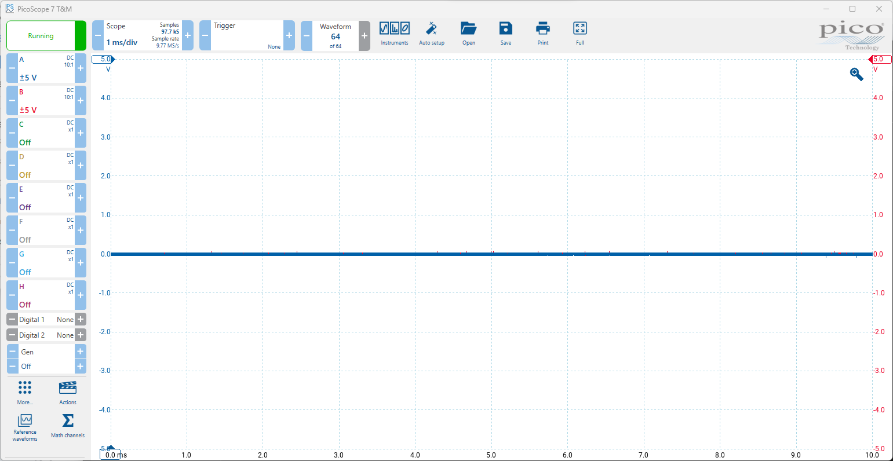

PicoScope 7 Quick-Start guide
This is a tutorial on how to install, launch and run the PicoScope 7 software for the first time. It is an ideal tutorial for new users to PicoScope 7 and PicoScopes entirely. For more information please contact our tech support team at support@picotech.com
Installing PicoScope 7
Windows
- Go to https://www.picotech.com/downloads.
- Select your series and device from the lists provided.
- In Software download the stable (recommended) version of PicoScope 7. 
- Run the installer and PicoScope 7 will be installed on your PC. 
{kind=link}
{kind=link}
Plugging in your PicoScope
- Use the included USB-A to USB-B cable and plug your PicoScope into your PC.
- If your device comes with a mains plug adapter, please plug it in for full PicoScope functionality and power on.
- When successfully plugged in, you may hear an audiable two tones to signify your PC recognising the device.
- You will see the LED on the front panel of your PicoScope lit with a solid colour.
- Your PicoScope is now plugged in, now you can Launch PicoScope 7.
Launching PicoScope 7
- Find the PicoScope 7 icon on your desktop or start menu, and click to launch PicoScope 7.
- PicoScope 7 will open and search for a device on start-up.
- If your PicoScope is detected, and it's the only PicoScope plugged in, it will connect and run that PicoScope.
- If there is more than 1 PicoScope attached, you will need to select which PicoScope you are using.
 - Once a PicoScope is connected, the software will now be running. 
{kind=link}
{kind=link}
{kind=link}
Adjusting voltage and timebase
null